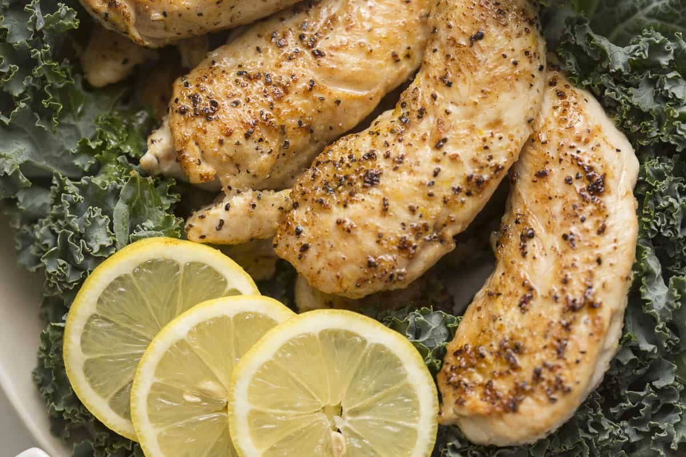

Home
Chicken Breast, Easy & Quick

Description
Easy to make chicken breast, prepare and cook within 10 minutes. Versatile, as it can be added to any dish as protein. Cooked in pan, with seasoning.
Ingredients
- 4 oz chicken breast
- Salt
- Pepper
- Ground cumin
- Garlic powder (optional)
- 1 tsp olive oil
Steps
- Cut chicken breast so that each piece has roughly uniform thickness.
- Using a paper towel, lightly dab the chicken breast, removing moisture off the surface and flattening the chicken breast. Flip over and repeat.
- Evenly season the chicken breast with salt, pepper, and ground cumin, as well as garlic powder if desired.
- Pour 1/2 tsp of olive oil over the chicken breast, then use a brush to evenly disperse the oil and seasoning.
- Flip chicken breast over and repeat on the other side.
- Turn the stove on to medium heat, and allow pan to warm for around 5 minutes (until lightly steaming).
- Place chicken breast on pan, cook for 1 to 2.5 minutes based on thickness.
- Flip and cook the other side. Take chicken breast off the pan when internal temperature has reached above 140°F.
- Allow chicken breast to rest for around five minutes.